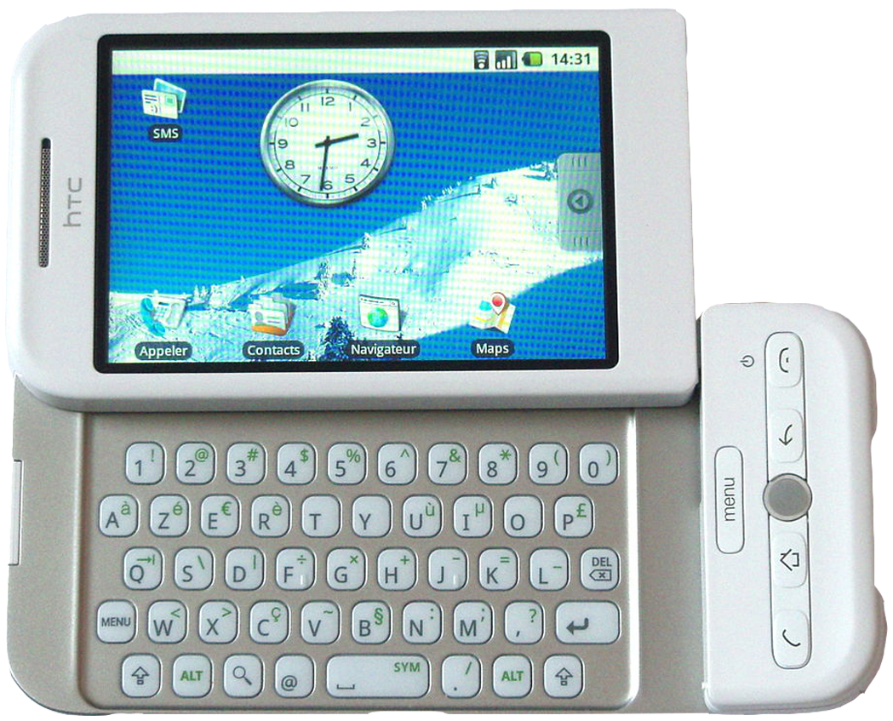

A primeira versão do Android foi lançada em setembro/2008, mas a história do sistema operacional iniciou muito antes, em outubro/2003. Foi nessa época que um grupo de quatro pessoas criaram a empresa chamada Android Inc. Andy Rubin é o nome mais importante desse quarteto, conhecido como o “pai do Android”. Naquela época o grupo planejava lançar o Android como um sistema operacional para câmera digitas, porém em reuniões com os investidores o grupo percebeu que esse nicho não tinha potencial de crescimento. E mudaram o foco para projeto de telefones móveis. Em 2005 a Android Inc virou propriedade da Google, por US$ 50 milhões. A Companhia já prevendo que o mercado se voltaria fortemente ao segmento móvel e sendo um sistema aberto o Android poderia espalhar rapidamente e levar os serviços da Google para o mundo todo.
A criação do Android deu um passo grande quando em 2007 a Google junto com outras grandes fabricantes como Samsung, Sony, HTC, operadoras de telefonia e fabricantes de hardware reuniram-se em um consórcio de tecnologia e fundaram a Open Handset Alliance. O objetivo dessa aliança era criar padrões livres para dispositivos móveis e criar uma plataforma de código aberto para smartphones, baseada no sistema Linux. O resultado foi a criação do Sistema Operacional Android.
O primeiro aparelho comercialmente disponível a rodar o sistema foi o HTC dream, lançado em out/2008. O modelo não foi um grande sucesso de vendas, até pq na mesma época Steve Jobs roubou a cena ao anunciar o Iphone, que já tinha a tela sensível ao toque. Mas de qualquer forma o lançamento cumpriu o propósito de abrir as portas do mercado para o Android.

O Android Developer Challenge foi uma iniciativa lançada pelo Google para incentivar os desenvolvedores a criar aplicativos inovadores e úteis para a plataforma Android. Essa competição ofereceu prêmios substanciais para os melhores aplicativos submetidos pelos desenvolvedores, estimulando a criação de uma grande variedade de aplicativos para o sistema operacional Android e colaborando com a criação das próximas versões do próprio Android. Este desafio não apenas reconheceu o potencial do Android, mas também impulsionou a criação de um ecossistema diversificado de aplicativos. Graças a esse estímulo, temos hoje um rico catálogo de aplicativos que tornam nossos dispositivos móveis mais úteis e envolventes. Em resumo, o Android Developer Challenge ilustra o poder da comunidade de desenvolvedores e o impacto positivo do código aberto na inovação tecnológica.
| Pré-Android | Pós-Android |
|---|---|
|
-Fabricantes e sistemas operacionais proprietários (Symbian, Blackberry OS, Windows Mobile, Palm OS); -Sistemas Operacionais de dispositivos móveis fragmentados; -Interfaces e experiências variadas; -Dificuldade na compatibilidade de aplicativo; |
-Unificação de experiências; -Maior consistência nas interfaces; -Compatibilidade entre dispositivos e ecossistemas de aplicativos; -Abordagem aberta e padronizada; -Flexibilidade para fabricantes de dispositivos e desenvolvedores de aplicativos; |